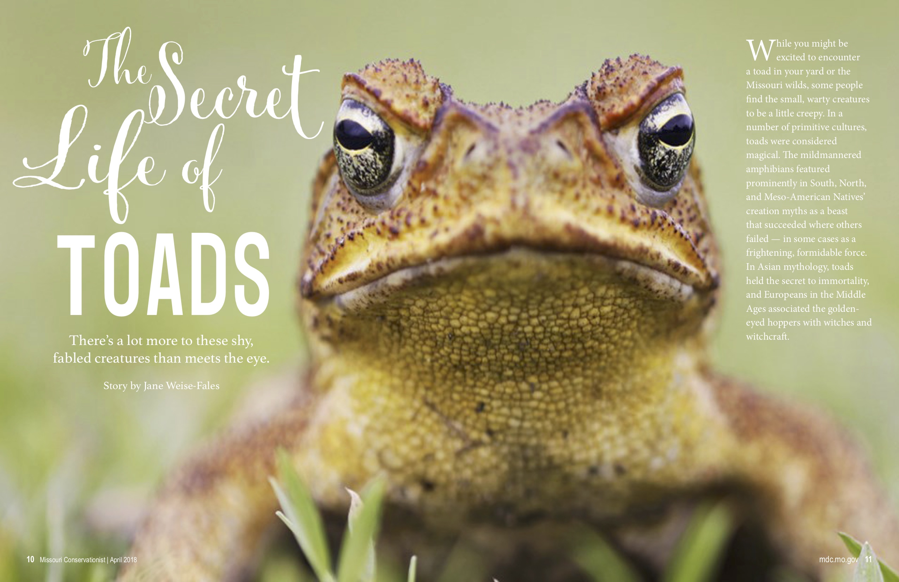
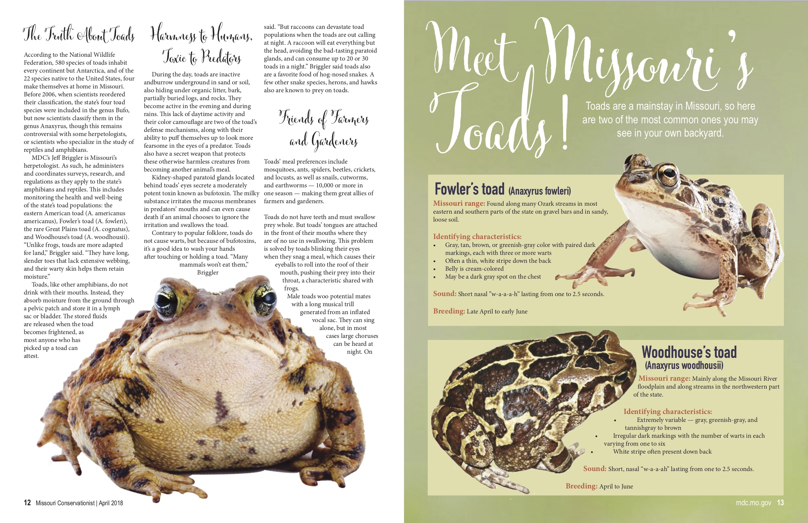
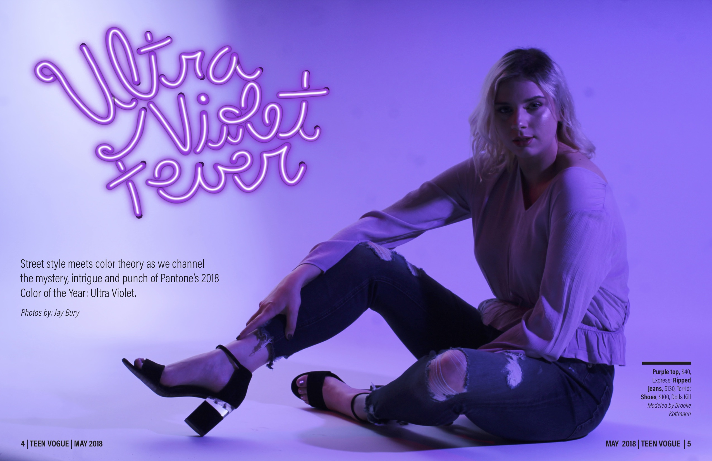
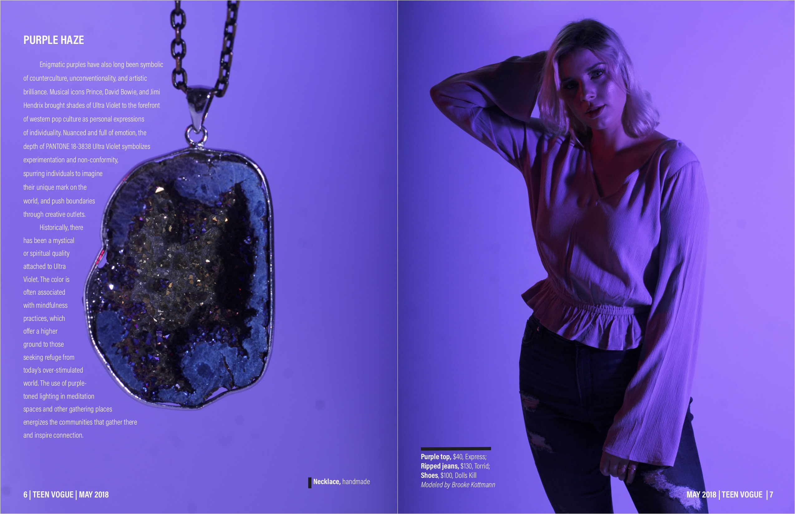
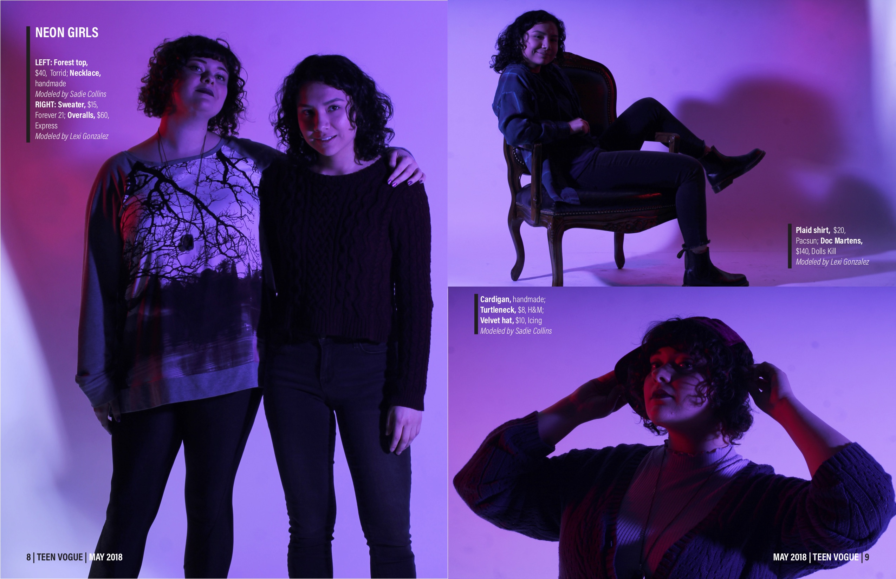
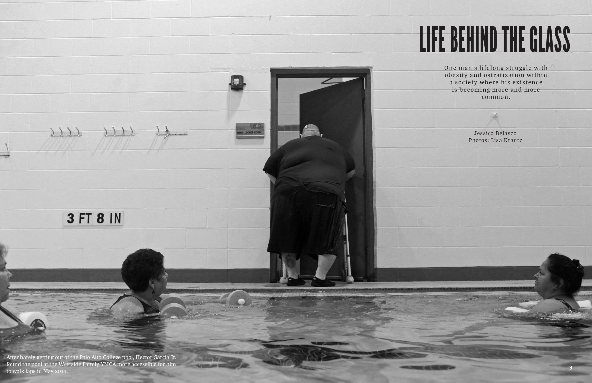
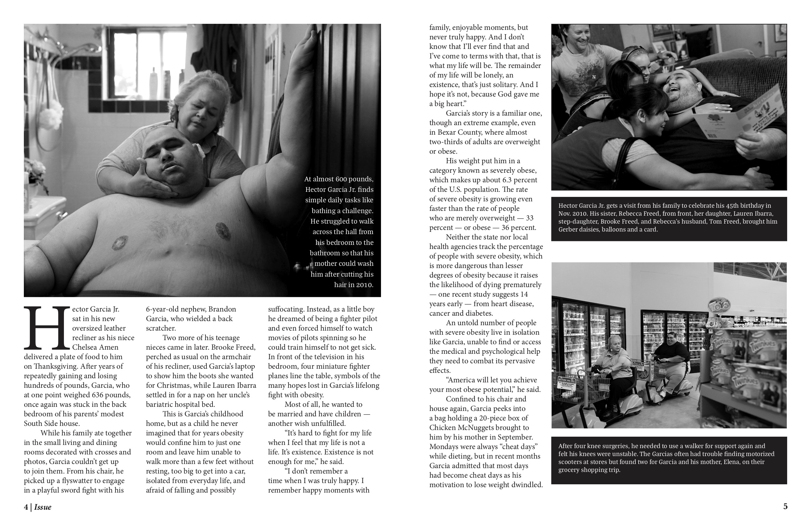
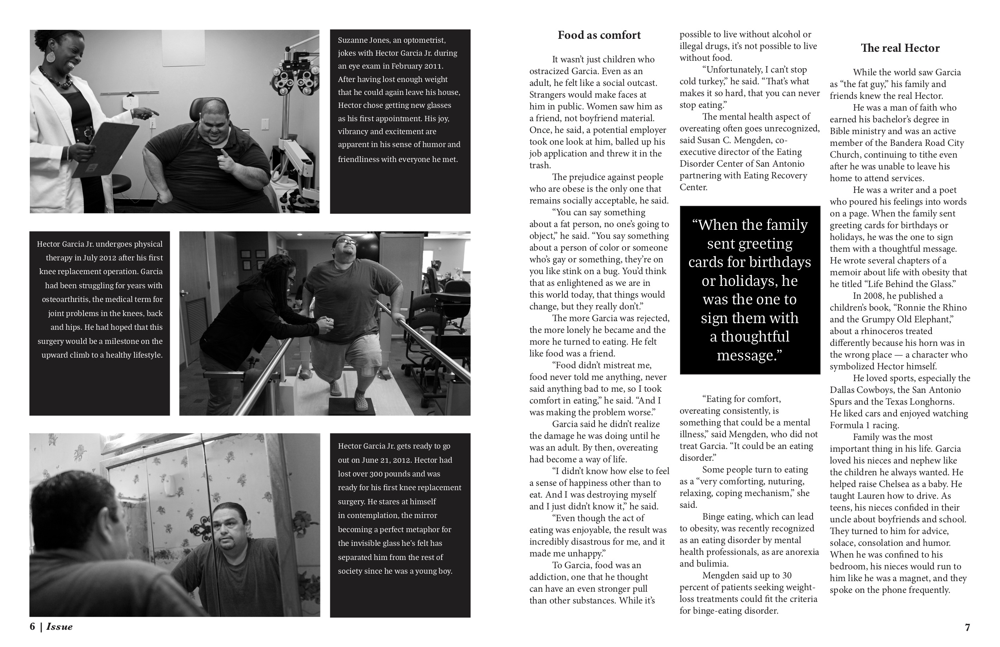
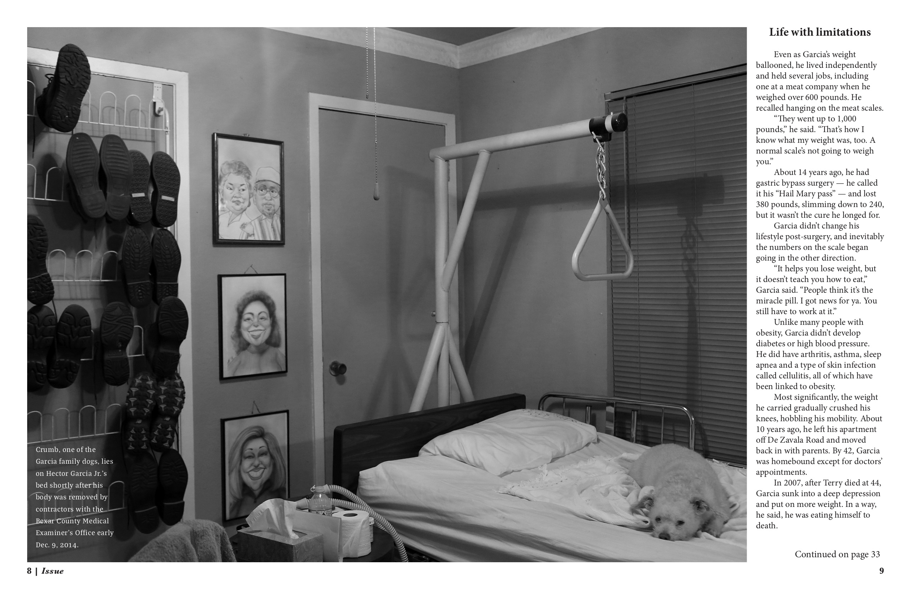

☰
☰
These are some of the magazine designs/spreads I created while in my various design classes at the University of Missouri. I am capable of making well-designed layouts for a variety of stories, including informational service pieces, fashion/photography spreads and longform photo-based features. Enjoy!
A redesign for a Missouri Convservationist feature about frogs in the region:
 A fashion spread I designed for a project using photos from a photoshoot I co-directed:
  A photo-based feature I designed for fundamentals of design class:
   